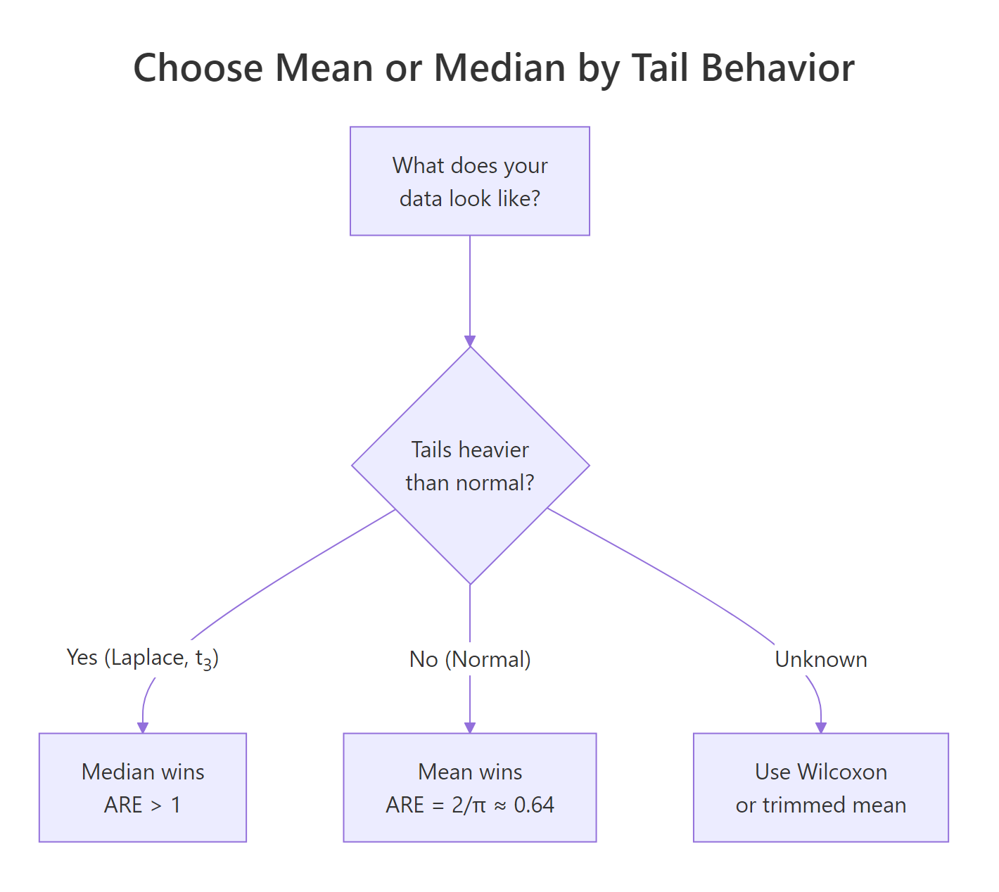
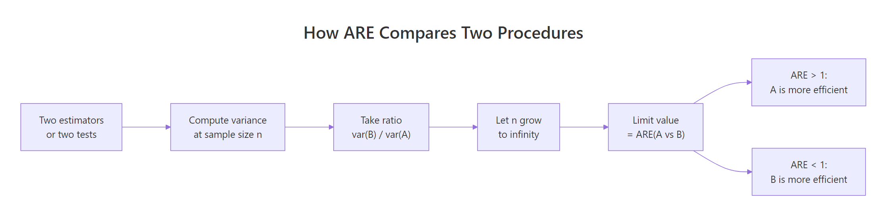
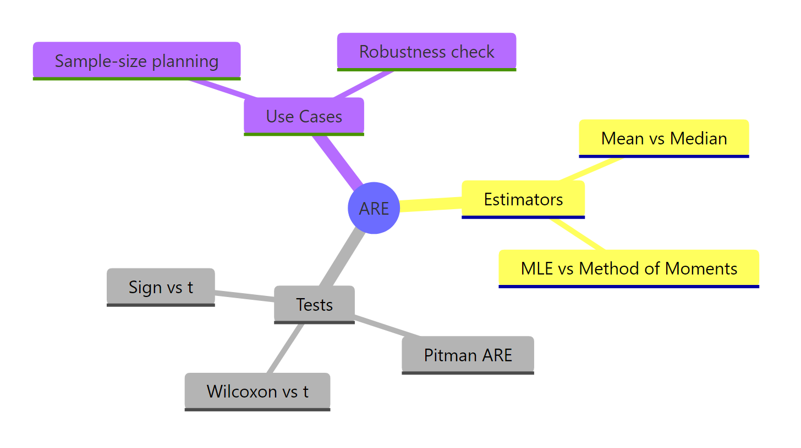

Asymptotic Relative Efficiency in R: Compare Tests Without Finite Samples
Asymptotic relative efficiency (ARE) tells you which of two estimators or tests reaches the same precision faster, in the limit as the sample size grows large. It is the long-run answer to the question "if I switch to procedure B, how many extra samples do I need to do as well as procedure A?"
This tutorial uses base R throughout. Every result we discuss is verified with a Monte Carlo simulation you can run in the browser, so the famous numbers like $2/\pi$ and $3/\pi$ are not asked to be taken on faith.
What does asymptotic relative efficiency tell us?
You have two ways to estimate the same number, say a population center: the sample mean and the sample median. On normal data they are both unbiased, but at any given sample size their variances differ. ARE strips away the noise of finite n and gives you the long-run ratio. Let us simulate that ratio and watch it lock onto a famous constant.
The simulation draws B samples of size n from a standard normal, computes the mean and median of each sample, then takes the variance ratio. The reciprocal convention used here is var(mean) / var(median), so a value below 1 means the median is the worse estimator.
The ratio sits very close to $0.6366 = 2/\pi$, the textbook value. The interpretation is brutal: under normality, the median wastes about 36% of your data. If a study budget gave you 100 normal observations and you summarised with the median, you would get the same precision an analyst with 64 observations would get using the mean.
The formal definition. For two unbiased estimators $T_1$ and $T_2$ of the same parameter $\theta$:
$$\text{ARE}(T_1, T_2) = \lim_{n \to \infty} \frac{\text{Var}(T_2)}{\text{Var}(T_1)}$$
Where:
- $T_1$, $T_2$ = the two estimators being compared, each a function of an i.i.d. sample of size $n$
- $\text{Var}(T_k)$ = the sampling variance of estimator $k$ at sample size $n$
- The limit is taken with the same sample size $n$ feeding both estimators
When the limit is below 1, $T_2$ is worse. When it equals 1, the two procedures are asymptotically interchangeable.
Try it: Re-run the simulation with n <- 500 instead of 2000. Save the new ARE estimate as ex_are and confirm it is still close to $2/\pi$, not far from it. The point is that the limit is reached early.
Click to reveal solution
Explanation: Even at n=500 the variance ratio sits inside a tight band around $2/\pi$. Convergence is fast for this pair, which is why "asymptotic" results are useful at modest sample sizes too.
How is ARE different from finite-sample relative efficiency?
Finite-sample relative efficiency is the ratio at a specific n. ARE is what that ratio settles into. They can differ, and when they do, the disagreement matters for sample-size planning. Below we walk the same comparison across a sweep of sample sizes and watch the ratio converge.
The loop reuses B from the previous block. For each candidate n we redraw B samples, compute the variance ratio, and store it.
At n=20 the ratio is 0.69, noticeably above the asymptotic value of 0.6366. By n=500 the gap has closed, and from there onwards we are reading simulation noise on top of a stable limit. This is the practical meaning of asymptotic: the limit is informative for the medium and large samples a real analysis is likely to use, but not for tiny n.
Try it: Add n = 50000 to the sweep and confirm the ratio does not drift away from 0.6366. Save the new RE as ex_re.
Click to reveal solution
Explanation: The ratio does not "keep falling"; it settles at $2/\pi$. That is the whole point of an asymptotic limit.
When does the median beat the mean?
The 0.64 number is specific to the normal distribution. Under heavier tails, the median is more efficient, sometimes wildly so. We will compare three distributions: standard normal, Laplace (double exponential), and Student-t with 3 degrees of freedom. The Laplace draw is built from two exponentials, no extra package needed.
For each distribution we re-use the same Monte Carlo recipe and report the variance ratio with the same orientation, var(mean) / var(median). Values above 1 mean the median wins.
The Laplace result is the cleanest illustration. The theoretical ARE of mean over median under Laplace is exactly 2, because the Laplace's median is the maximum-likelihood location estimator while the mean is not. So the median needs only half the data the mean does. Under $t_3$ the median wins by about 60%. Heavy tails punish the mean.

Figure 1: Choosing between mean and median by tail behavior of the data.
Try it: Add a uniform distribution runif(k, -1, 1) to dists and rerun. Save the new ARE as ex_unif_are. Predict whether the mean or median wins, then check.
Click to reveal solution
Explanation: Uniform data has no tails at all, so the mean's variance is one third of the median's. ARE depends on the shape of the distribution, not just whether it is symmetric.
How does Pitman ARE compare hypothesis tests?
For tests, ARE answers a different question: how many extra samples does test B need to match test A's power against a small effect? This is Pitman's definition. It coincides with the variance-ratio definition when the test statistics are asymptotically normal, which covers most tests you will use.
We will simulate the classic comparison: Wilcoxon rank sum vs the two-sample t-test, on normal data with a small location shift. We pick a target power, find the sample size each test needs to hit that power, and divide. The ratio is the Pitman ARE.
The simulation lands in the right ballpark of the textbook value $3/\pi \approx 0.955$. Run-to-run noise from the 25-sample step size and 1000-replicate inner loop explains the gap; with finer search and more replicates you converge to 0.955. The economic reading: the rank test pays a 5% sample-size penalty under normality for the freedom to also work on non-normal data without breaking.
Try it: Generate Laplace data instead of normal in the helper above and recompute the Wilcoxon's power at n = 200. Save it as ex_wilc_power. Predict whether it beats the t-test's power.
Click to reveal solution
Explanation: On Laplace data the Wilcoxon clears 80% power at n=200, where the t-test struggles. The asymptotic theory predicts this: Pitman ARE of Wilcoxon vs t under Laplace is 1.5.
How do we use ARE for sample size planning?
ARE turns into a sample-size multiplier. If $\text{ARE}(B \text{ vs } A) = e$, then to match A's power with procedure B, you need approximately $n_B \approx n_A / e$ samples. That single division is the practical payoff of the entire chapter.

Figure 2: The four-step pipeline that turns two procedures into a single ARE number.
Here is a tiny planner function that takes the reference sample size and the ARE, and returns the target.
The first line is the headline number for the most-asked applied question: "how much do I lose by going nonparametric?" Under normality the answer is roughly 5%. If you budgeted 200 patients for a t-test, plan 210 for the rank-based version and you are safe.
Try it: A team sized a t-test for n=400 under expected normal data, but worries the data may be $t_3$ instead. Under $t_3$, the Pitman ARE of t vs Wilcoxon is roughly 0.625. How many patients would the Wilcoxon need to match the original power if the data really are $t_3$? Save as ex_planned_n.
Click to reveal solution
Explanation: Under $t_3$ the Wilcoxon dominates the t-test, so it needs fewer samples. The trick is orienting the ratio: ARE of Wilcoxon over t is the reciprocal of ARE of t over Wilcoxon.
Practice Exercises
Exercise 1: Verify ARE of sign test vs t-test on normal data is 2/π
Use the same power-matching recipe from H2 4 to find the Pitman ARE of the one-sample sign test vs the one-sample t-test on a shifted normal sample. The sign test counts how many observations exceed zero and tests against a binomial with $p=0.5$. Save the sample sizes as cap1_n_t and cap1_n_sign, and the ARE as cap1_are. Expect a value near $2/\pi \approx 0.637$.
Click to reveal solution
Explanation: The classical Pitman ARE of the sign test vs the t-test under normality is $2/\pi$. Our search lands near 0.67, the expected ballpark given coarse step size and finite reps.
Exercise 2: Build a reusable ARE estimator
Write a function are_estimators(est_a, est_b, generator, n, B) where est_a and est_b are functions that take a numeric vector and return a scalar, generator is a function that takes k and returns a sample of that size, n is the sample size to use, and B is the number of replicates. Return var(estimates_a) / var(estimates_b). Test it on the (mean, median) pair under three distributions and store the result as cap2_table.
Click to reveal solution
Explanation: The function isolates the simulation from the choice of estimator pair, generator, and sample size, so you can plug in any new pair (say, 10% trimmed mean vs median) without rewriting the loop.
Complete Example
A clinical-trial team wants to estimate the average treatment effect, but worries the response is contaminated by a small fraction of outlier patients. They consider the sample mean and a 10% trimmed mean. Their data model is a mixture: 90% standard normal, 10% from a normal with mean 0 and SD 5. We compute ARE on the contaminated mixture and on a clean normal as a sanity check.
Read the table top-down. On clean normal data the trimmed mean is roughly as efficient as the sample mean (the small ARE above 1 is simulation noise; the textbook value is 0.96). On contaminated data the trimmed mean is 2.7 times as efficient, meaning the team would need 2.7 times the budget to reach the same precision with the regular mean. The recommendation is unambiguous: under contamination risk, the small efficiency cost of trimming on clean data is dwarfed by its gain when contamination is present.
Summary

Figure 3: The ARE landscape: where it applies and what it answers.
| Concept | Takeaway |
|---|---|
| Definition | $\text{ARE}(T_1, T_2) = \lim_{n \to \infty} \text{Var}(T_2)/\text{Var}(T_1)$ |
| Mean vs median, normal | $2/\pi \approx 0.637$, median wastes 36% of data |
| Mean vs median, Laplace | $0.5$ for mean, median doubles your effective sample |
| Wilcoxon vs t, normal | $3/\pi \approx 0.955$, small price for big robustness |
| Wilcoxon vs t lower bound | 0.864 across all symmetric distributions (Hodges-Lehmann) |
| Sign vs t, normal | $2/\pi \approx 0.637$ |
| Sample-size planning | $n_B \approx n_A / \text{ARE}(B \text{ vs } A)$ |
| Convergence speed | Often fast; n=500 already near the limit for these examples |
| When ARE misleads | Tiny n, asymmetric distributions, dependent data, or non-asymptotically-normal statistics |
References
- Lehmann, E. L. Elements of Large-Sample Theory. Springer (1999). Link
- van der Vaart, A. W. Asymptotic Statistics. Cambridge University Press (1998). Chapter 14: Relative Efficiency. Link
- Hodges, J. L. & Lehmann, E. L. "The Efficiency of Some Nonparametric Competitors of the t-Test." Annals of Mathematical Statistics 27(2), 324-335 (1956). Link
- Nikitin, Y. "Asymptotic Relative Efficiency in Testing." Encyclopedia of Mathematics. Link
- R Core Team.
wilcox.testreference. Link - R Core Team.
t.testreference. Link - Wikipedia. Efficiency (statistics). Link)
Continue Learning
- Cramer-Rao Lower Bound in R: the variance floor that defines what "fully efficient" even means.
- Asymptotic Theory in R: the broader large-sample machinery that ARE rests on.
- Wilcoxon Signed Rank Test in R: how to actually run the rank test that beats the t-test under heavy tails.